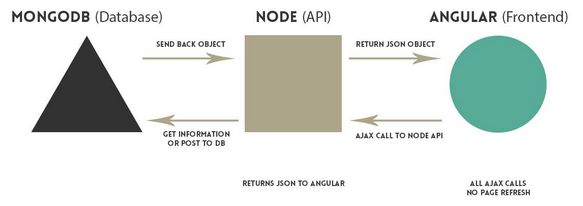

MEAN Stack : Node ToDo List App with Mongodb
In this article, we'll make a ToDo list (https://github.com/epic-math/NodeJS-MEAN.git.
$ mkdir ToDo $ cd ToDo $ npm init
Now we want to modify package.json:
{
"name" : "node-todo",
"version" : "0.0.0",
"description" : "Simple todo application.",
"main" : "server.js",
"author" : "Bogotobogo",
"dependencies" : {
"express" : "~4.13.2",
"mongoose" : "~3.6.2",
"morgan" : "~1.6.1",
"body-parser": "~1.14.1",
"method-override": "~2.3.5"
}
}
When we run npm install, npm consult this file and install dependencies such as Express and Mongoose:
$ sudo npm install
The tilde (~) matches the most recent minor version (the middle number): ~1.2.3 will match all 1.2.x versions but will miss 1.3.0.
The caret (^), on the other hand, is more relaxed. It will update to the most recent major version (the first number). ^1.2.3 will match any 1.x.x release including 1.3.0, but will hold off on 2.0.0.
Because MongoDB is so easy to use, the basic Node.js driver can be the best solution for many applications. However, if we need validations, associations, and other high-level data modeling functions, then an Object Document Mapper (ODM) or Object Relational Mapping (ORM) may be helpful. This means that Mongoose translates data in the database to JavaScript objects for use in our application
Mongoose is an ODM for Node.js. It has a thriving open source community and includes advanced schema-based features such as async validation, casting, object life-cycle management, pseudo-joins, and rich query builder support.
In our package.json file, we told Node that our main file would be server.js. This is the main file for our Node app and where we will configure the entire application.
Install the MongoDB packages:
$ sudo apt-get install -y mongodb-org
Check installed package list:
$ dpkg --list |grep mongo ii mongodb-org 3.0.6 amd64 MongoDB open source document-oriented database system (metapackage) ii mongodb-org-mongos 3.0.6 amd64 MongoDB sharded cluster query router ii mongodb-org-server 3.0.6 amd64 MongoDB database server ii mongodb-org-shell 3.0.6 amd64 MongoDB shell client ii mongodb-org-tools 3.0.6 amd64 MongoDB tools
$ sudo service mongod start
Here is the code for our Node server (actually, we rename app.js to server.js). In the subsequent sections, we'll see what the code is doing:
// server.js
// set up ========================
var express = require('express');
var app = express(); // create our app w/ express
var mongoose = require('mongoose'); // mongoose for mongodb
var morgan = require('morgan'); // log requests to the console (express4)
var bodyParser = require('body-parser'); // pull information from HTML POST (express4)
var methodOverride = require('method-override'); // simulate DELETE and PUT (express4)
var database = require('./config/database');
var port = process.env.PORT || 8888; // set the port
// configuration ===============================================================
mongoose.connect(database.url); // connect to mongoDB database on modulus.io
app.use(express.static(__dirname + '/public')); // set the static files location /public/img will be /img for users
app.use(morgan('dev')); // log every request to the console
app.use(bodyParser.urlencoded({'extended':'true'})); // parse application/x-www-form-urlencoded
app.use(bodyParser.json()); // parse application/json
app.use(bodyParser.json({ type: 'application/vnd.api+json' })); // parse application/vnd.api+json as json
app.use(methodOverride());
// routes ======================================================================
require('./app/routes.js')(app);
// listen (start app with node server.js) ======================================
app.listen(port);
console.log("App listening on port : " + port);
require() method is used to load the module into our code.
We just configured the app for Express:
var express = require('express');
var app = express();
var mongoose = require('mongoose'); // mongoose for mongodb
var morgan = require('morgan'); // log requests to the console (express4)
var bodyParser = require('body-parser'); // pull information from HTML POST (express4)
var methodOverride = require('method-override'); // simulate DELETE and PUT (express4)
app.use() method to bind a middleware function with a specific path.
We'll use mongoose for mongodb and to console logging we use morgan. The body-parser will be used to pull posted info. The method-override let us use HTTP verbs such as PUT or DELETE in places where the client doesn't support it.
Our server will listen to port 8888:
app.listen(port);
console.log("App listening on port : " + port);
We will need a schema and a model in order to work with the data that will be persisted in our MongoDB database. Schemas define the structure of documents within a collection and models are used to create instances of data that will be stored in documents. We will be making a database of Todos to keep track. We started off by creating a Todo schema and model:
var Todo = mongoose.model('Todo', {
text : String
});
Our model has just the text for the Todo. MongoDB will automatically generate an _id for each Todo that we create.
Notice that the Todo model is capitalized. That's because when a model is compiled, the result is a constructor function that is used to create instances of the model. The instances created from the model constructor are documents which will be persisted by Mongo.
module.exports allows us to pass data from one file to another. Note that just using require('./config/database') doesn't automagically give us access to those variables. module.exports exposes those variables (or functions or anything else) to other files.
// config/database.js
module.exports = {
url : 'mongodb://localhost/'
};
// app/models/todo.js
// load mongoose since we need it to define a model
var mongoose = require('mongoose');
module.exports = mongoose.model('Todo', {
text : String,
done : Boolean
});
Angular accesses data it needs through the Node API. Node connects to the database and returns JSON information to Angular based on the RESTful routing.
Picture source : Creating a Single Page Todo App with Node and Angular
Based on the routes in server.js, we have a table showing how a frontend application should request data from the API:
| Method | URL | Description |
|---|---|---|
| GET | /api/todos | Get all of the todos |
| POST | /api/todos | Create a single todo |
| DELETE | /api/todos/:todo_id | Delete a single todo |
We used the Mongoose actions to help us to interact with our database.
Recall we created our model earlier with:
var Todo = mongoose.model
Now, we can use Todo to GET, POST, and DELETE.
Here we'll define our routes file, and we'll just load that in our server.js and pass in our app variable to the function. This way the routes file has access to app and express.
// app/routes.js
// load the todo model
var Todo = require('./models/todo');
// expose the routes to our app with module.exports
module.exports = function(app) {
// api ---------------------------------------------------------------------
// get all todos
app.get('/api/todos', function(req, res) {
// use mongoose to get all todos in the database
Todo.find(function(err, todos) {
// if there is an error retrieving, send the error. nothing after res.send(err) will execute
if (err)
res.send(err)
res.json(todos); // return all todos in JSON format
});
});
// create todo and send back all todos after creation
app.post('/api/todos', function(req, res) {
// create a todo, information comes from AJAX request from Angular
Todo.create({
text : req.body.text,
done : false
}, function(err, todo) {
if (err)
res.send(err);
// get and return all the todos after you create another
Todo.find(function(err, todos) {
if (err)
res.send(err)
res.json(todos);
});
});
});
// delete a todo
app.delete('/api/todos/:todo_id', function(req, res) {
Todo.remove({
_id : req.params.todo_id
}, function(err, todo) {
if (err)
res.send(err);
// get and return all the todos after you create another
Todo.find(function(err, todos) {
if (err)
res.send(err)
res.json(todos);
});
});
});
};
Recall, in our previous section, we required the Express module, then we defined a module function that initializes the Express application. First, it creates a new instance of an Express application, and then it requires the routing file and calls it as a function passing it the application instance as an argument.
In the following code snippet:
module.exports = function(app) {
The routing module function accepts a single argument called app, so when we call this function, we'll need to pass it the instance of the Express application.
public/index.html is the HTML needed to interact with Angular.
<!-- ASSIGN OUR ANGULAR MODULE -->
<html ng-app="bogoTodo">
<head>
<!-- META -->
<meta charset="utf-8">
<meta name="viewport" content="width=device-width, initial-scale=1"><!-- Optimize mobile viewport -->
<title>Node/Angular Todo App</title>
<!-- SCROLLS -->
<link rel="stylesheet" href="//netdna.bootstrapcdn.com/bootstrap/3.0.0/css/bootstrap.min.css"><!-- load bootstrap -->
<style>
html { overflow-y:scroll; }
body { padding-top:50px; }
#todo-list { margin-bottom:30px; }
</style>
<!-- SPELLS -->
<script src="//ajax.googleapis.com/ajax/libs/jquery/2.0.3/jquery.min.js"></script><!-- load jquery -->
<script src="//ajax.googleapis.com/ajax/libs/angularjs/1.0.8/angular.min.js"></script><!-- load angular -->
<script src="core.js"></script>
</head>
<!-- SET THE CONTROLLER AND GET ALL TODOS -->
<body ng-controller="mainController">
<div class="container">
<!-- HEADER AND TODO COUNT -->
<div class="jumbotron text-center">
<h1>My Todo List <span class="label label-info">{{ todos.length }}</span></h1>
</div>
<!-- TODO LIST -->
<div id="todo-list" class="row">
<div class="col-sm-4 col-sm-offset-4">
<!-- LOOP OVER THE TODOS IN $scope.todos -->
<div class="checkbox" ng-repeat="todo in todos">
<label>
<input type="checkbox" ng-click="deleteTodo(todo._id)"> {{ todo.text }}
</label>
</div>
</div>
</div>
<!-- FORM TO CREATE TODOS -->
<div id="todo-form" class="row">
<div class="col-sm-8 col-sm-offset-2 text-center">
<form>
<div class="form-group">
<!-- BIND THIS VALUE TO formData.text IN ANGULAR -->
<input type="text" class="form-control input-lg text-center" placeholder="I want to detect/capture dark matter" ng-model="formData.text">
</div>
<!-- createToDo() WILL CREATE NEW TODOS -->
<button type="submit" class="btn btn-primary btn-lg" ng-click="createTodo()">Add</button>
</form>
</div>
</div>
</div>
</body>
</html>
Let's run node server:
$ npm start > node-todo@0.0.0 start /home/k/TEST7/ToDo > node server.js App listening on port 7777 GET /core.js 404 30.424 ms - 20
As we can see from the output, we're missing public/core.js which is referred from index.html. It should look like this:
<script src="core.js"></script>
Let's add the missing component - Angular!
In next section, our Angular will be setup. We will create a module, controller, and define functions to handle todos.
Here is our AngularJS file, public/core.js:
// public/core.js
var bogoTodo = angular.module('bogoTodo', []);
function mainController($scope, $http) {
$scope.formData = {};
// when landing on the page, get all todos and show them
$http.get('/api/todos')
.success(function(data) {
$scope.todos = data;
console.log(data);
})
.error(function(data) {
console.log('Error: ' + data);
});
// when submitting the add form, send the text to the node API
$scope.createTodo = function() {
$http.post('/api/todos', $scope.formData)
.success(function(data) {
$scope.formData = {}; // clear the form so our user is ready to enter another
$scope.todos = data;
console.log(data);
})
.error(function(data) {
console.log('Error: ' + data);
});
};
// delete a todo after checking it
$scope.deleteTodo = function(id) {
$http.delete('/api/todos/' + id)
.success(function(data) {
$scope.todos = data;
console.log(data);
})
.error(function(data) {
console.log('Error: ' + data);
});
};
}
We created our Angular module, controller (mainController), and our functions to get all todos, create a todo, and delete a todo.
All these will be hitting the API we just created.
On page load, we will GET /api/todos and bind the JSON we receive from the API to $scope.todos. We will then loop over these in our view to make our todos.

We can interact with it at localhost:8888/api/todos to get all the todos:
$ node server.js App listening on port 8888 GET /api/todos 200 92.535 ms - 113
We can daemonize a node.js server.
$ sudo npm install -g forever $ which forever /usr/local/bin/forever
Let's start node:
$ forever start server.js warn: --minUptime not set. Defaulting to: 1000ms warn: --spinSleepTime not set. Your script will exit if it does not stay up for at least 1000ms info: Forever processing file: server.js
Check the processes:
$ ps -ef|grep node|grep -v grep ubuntu 3557 1 0 22:50 ? 00:00:00 /usr/bin/nodejs /usr/local/lib/node_modules/forever/bin/monitor server.js ubuntu 3559 3557 0 22:50 ? 00:00:00 /usr/bin/nodejs /home/ubuntu/ToDo/server.js
If we want to stop node, issue the following command:
$ forever stop server.js
Source available at https://github.com/epic-math/NodeJS-MEAN.
So far, we primarily worked on node side back-end.
The core.js has all the angular portion of code, and we want to move our javascript files and Angular modules into separate files under public folder from core.js. That's because we want our application to be modular so that our controller and all of our $http requests are in their own files.
We may want to upgrade out angular to 1.4.5:
<script src="//ajax.googleapis.com/ajax/libs/angularjs/1.4.5/angular.min.js"></script>
We want to create our service.
The to-do service is meant to interact with our Node API. We want to have all the code to get, create, or delete a to-do inside our service. This ensures that we can test this code separate of our overall application.
Let's get all that $http code out of core.js.
// js/services/todos.js
angular.module('todoService', [])
// super simple service
// each function returns a promise object
.factory('Todos', function($http) {
return {
get : function() {
return $http.get('/api/todos');
},
create : function(todoData) {
return $http.post('/api/todos', todoData);
},
delete : function(id) {
return $http.delete('/api/todos/' + id);
}
}
});
We defined our service using .factory with three different functions. get, create and delete will all return promise objects that we can use in our controller.
Note that in Angular, there are many different ways to declare a service (.service, .factory and .provider).
Now we want to create our Angular module for our controller by moving most of the code from core.js.
// js/controllers/main.js
angular.module('todoController', [])
.controller('mainController', function($scope, $http) {
$scope.formData = {};
// when landing on the page, get all todos and show them
$http.get('/api/todos')
.success(function(data) {
$scope.todos = data;
})
.error(function(data) {
console.log('Error: ' + data);
});
// when submitting the add form, send the text to the node API
$scope.createTodo = function() {
$http.post('/api/todos', $scope.formData)
.success(function(data) {
$scope.formData = {}; // clear the form so our user is ready to enter another
$scope.todos = data;
})
.error(function(data) {
console.log('Error: ' + data);
});
};
// delete a todo after checking it
$scope.deleteTodo = function(id) {
$http.delete('/api/todos/' + id)
.success(function(data) {
$scope.todos = data;
})
.error(function(data) {
console.log('Error: ' + data);
});
};
});
Though we have our controller and service in their own modules, they won't be able to work together until we inject them into our main application module.
To get everything working together, we just have to load our controller and services, and then inject our controller and service into the main module.
Make sure to move our original core.js file from the root directory into the js folder. This ensures that all our javascript code will be located in the same location.
Here is our code for our new core.js.
// js/core.js
angular.module('bogoTodo', ['todoController', 'todoService']);
We have our main module bogoTodo and then we inject our controller and service.
We have linked everything but we are not using our new service yet.
Let's inject that into our controller and use it!
// js/controllers/main.js
angular.module('todoController', [])
// inject the Todo service factory into our controller
.controller('mainController', function($scope, $http, Todos) {
$scope.formData = {};
// GET =====================================================================
// when landing on the page, get all todos and show them
// use the service to get all the todos
Todos.get()
.success(function(data) {
$scope.todos = data;
});
// CREATE ==================================================================
// when submitting the add form, send the text to the node API
$scope.createTodo = function() {
// validate the formData to make sure that something is there
// if form is empty, nothing will happen
// people can't just hold enter to keep adding the same to-do anymore
if (!$.isEmptyObject($scope.formData)) {
// call the create function from our service (returns a promise object)
Todos.create($scope.formData)
// if successful creation, call our get function to get all the new todos
.success(function(data) {
$scope.formData = {}; // clear the form so our user is ready to enter another
$scope.todos = data; // assign our new list of todos
});
}
};
// DELETE ==================================================================
// delete a todo after checking it
$scope.deleteTodo = function(id) {
Todos.delete(id)
// if successful creation, call our get function to get all the new todos
.success(function(data) {
$scope.todos = data; // assign our new list of todos
});
};
});
We moved the old $http code outside of our controller and into our service. The service will return a promise object so we can use the data using .success promise.
We need to load up the new files in index.html:
...
<!-- SPELLS -->
<script src="//ajax.googleapis.com/ajax/libs/jquery/2.0.3/jquery.min.js"></script><!-- load jquery -->
<script src="//ajax.googleapis.com/ajax/libs/angularjs/1.4.5/angular.min.js"></script><!-- load angular -->
<script src="js/core.js"></script>
<script src="js/controllers/main.js"></script> <!-- load up our controller -->
<script src="js/services/todos.js"></script> <!-- load our todo service -->
<script src="js/core.js"></script> <!-- load our main application -->
...
- In index.html, we defined an AngularJS application (bogoTodo) using ng-app directive:
<html ng-app="bogoTodo">
- Also, we defined a controller (mainController) using ng-controller directive:
<body ng-controller="mainController">
The mainController function is a JavaScript function, and AngularJS will invoke the controller with a $scope and $http object as we can see in js/controllers/main.jsangular.module('todoController', []) .controller('mainController', function($scope, $http) {$scope is the application object (the owner of application variables and functions) and $http is an XMLHttpRequest object for requesting external data.
If success, the controller creates a property (todos) in the scope, with JSON data from the server:$http.get('/api/todos') .success(function(data) { $scope.todos = data; }) - The syntax for angular.module() is:
angular.module(name, [requires], [configFn]);
where:- name: The name of the module to create or retrieve.
- requires: If specified then new module is being created. If unspecified then the module is being retrieved for further configuration.
- configFn: Optional configuration function for the module.
All modules (angular core or 3rd party) that should be available to an application must be registered using this mechanism.
Passing one argument retrieves an existing angular.Module, whereas passing more than one argument creates a new angular.Module
It returns a new module with the angular.Module api.
See angular.modulevar app = angular.module("myApp", []);Note that the [] parameter in the module definition can be used to define dependent modules. This is where dependency injection comes in because our module might actuallyh rely on other modules to get data. - In public/js/core.js, we inject another controller (todoController) and a service (todoService) into our main application module.
angular.module('bogoTodo', ['todoController', 'todoService']); -
The factory constructs a new service using a function with zero or more arguments (these are dependencies on other services).
// js/services/todos.js angular.module('todoService', []) // each function returns a promise object .factory('Todos', function($http) { return { get : function() { return $http.get('/api/todos'); },The return value of this function is the service instance created by the factory.
Here is the list of references:
Node.JS
Ph.D. / Golden Gate Ave, San Francisco / Seoul National Univ / Carnegie Mellon / UC Berkeley / DevOps / Deep Learning / Visualization